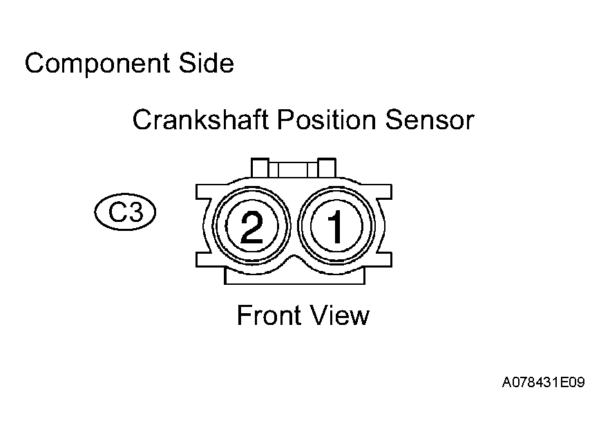

Inspection Procedure
HINT:
- If no problem is found by this diagnostic troubleshooting procedure, troubleshoot the engine mechanical systems.
- Check the engine speed. The engine speed can be checked by using the intelligent tester. To check, follow the operation below:
- Connect the intelligent tester to the DLC3.
- Start the engine.
- Turn the tester ON.
- Enter the following menus: DIAGNOSIS / ENHANCED OBD II / DATA LIST / PRIMARY / ENGINE SPD.
The engine speed may be indicated as zero despite the engine revolving normally. This is caused by a lack of NE signals from the Crankshaft Position (CKP) sensor. Alternatively, the engine speed may be indicated as lower than the actual engine speed if the CKP sensor voltage output is insufficient.
- Read freeze frame data using the intelligent tester. Freeze frame data records the engine condition when malfunctions are detected. When troubleshooting, freeze frame data can help determine if the vehicle was moving or stationary, if the engine was warmed up or not, if the air-fuel ratio was lean or rich, and other data from the time the malfunction occurred.
- INSPECT CRANKSHAFT POSITION SENSOR (RESISTANCE)
- Disconnect the C3 Crankshaft Position (CKP) sensor connector.
- Measure the resistance between terminals 1 and 2.
Standard resistance
TESTER CONNECTION - SPECIFIED CONDITIONTester Connection Specified Condition 1 - 2 985 to 1,600 Ω at cold 1 - 2 1,265 to 1,890 Ω at hot 
Courtesy of © TOYOTA, LICENSE AGREEMENT TMS1002HINT:
The terms cold and hot refer to the temperature of the sensor. Cold means approximately -10 to 50°C (14 to 122°F). Hot means approximately 50 to 100°C (122 to 212°F).
NG: REPLACE CRANKSHAFT POSITION SENSOR
OK: Go to Next Step
- CHECK HARNESS AND CONNECTOR (CRANKSHAFT POSITION SENSOR - ECM)
- Disconnect the C3 CKP sensor connector.
- Disconnect the E5 ECM connector.
- Measure the resistance of the harness and connectors.
Standard resistance (Check for open)
TESTER CONNECTION - SPECIFIED CONDITIONTester connection Specified Condition NE+ (C3-1) - NE+ (E5-27) Below 1 Ω NE- (C3-2) - NE- (E5-34) Below 1 Ω Standard resistance (Check for short)
TESTER CONNECTION - SPECIFIED CONDITIONTester connection Specified Condition NE+ (C3-1) or NE+ (E5-27) - Body ground 10 kΩ or higher NE- (C3-2) or NE- (E5-34) - Body ground 10 kΩ or higher
NG: REPAIR OR REPLACE HARNESS OR CONNECTOR
OK: Go to Next Step
- CHECK SENSOR INSTALLATION (CRANKSHAFT POSITION SENSOR)
- Check the CKP sensor installation.
OK: Sensor is installed correctly.
NG: SECURELY REINSTALL SENSOR
OK: Go to Next Step
- Check the CKP sensor installation.
- CHECK CRANKSHAFT (TEETH OF SENSOR PLATE)
- Check the teeth of the sensor plate.
OK: Sensor plate teeth do not have any cracks or deformation.
NG: REPLACE CRANKSHAFT
OK: REPLACE ECM
- Check the teeth of the sensor plate.